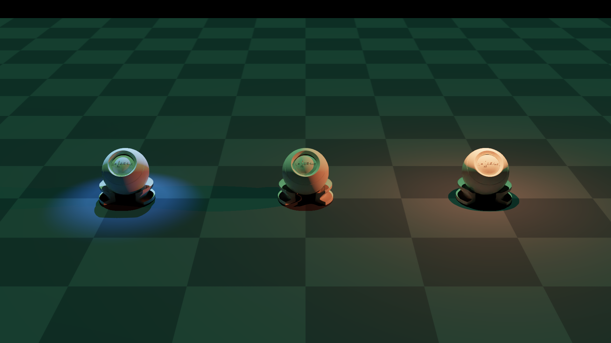

Light types#
A side-by-side tour of the three light types the plugin exposes through the lights field of NyxCameraOptions (kinds enumerated by ELightType): point, directional, and spot. The same trio of PBR balls is rendered under all three at once, each light coloured and placed to make its contribution unmistakable.

What it shows#
Three balls sit on a plane, spaced wide enough that each light’s falloff doesn’t bleed into its neighbour. By default Nyx fills the sky with a flat grey HDRI, which would muddy the demonstration; this example switches it off (see Disabling the default grey sky below) so every photon reaching a surface comes from one of the three lights declared on the camera.
A point light hovers just above the left ball. Saturated red, short range, isotropic falloff, the classic “bare bulb”. The hotspot is brightest right under the light and dies off into the plane around it.
A directional light, dim and green, tilts in from above. Reaches every ball equally and casts long parallel shadows. Think “sun” — at this intensity it’s faint enough that the point and spot easily dominate on their own balls, but it tints the middle ball (which has no other light on it) clearly green.
A spot light is mounted high and to the right, aimed down-and-in at the right ball. A cool blue cone with a narrow inner angle and a soft outer falloff produces a crisp puddle of light on the plane.
Reading the rendered frame:
Ball |
Dominant light |
What to look for |
|---|---|---|
Left |
Point (red) |
Bright top hemisphere going red, falloff visible on the plane around it. |
Middle |
Directional (green) |
The only ball with no punctual light on it — green wash from above and a long shadow trailing back. |
Right |
Spot (blue) |
Cool tint, sharp cone edge on the plane, soft falloff at the outer angle. |
How the lights are declared#
Each light is a plain dict with a type key plus the parameters specific to that type. The list is handed to the lights field of NyxCameraOptions:
POINT_LIGHT = {
"type": "point",
"pos": (-0.93, 0.0, 0.5),
"color": (1.0, 0.15, 0.05),
"intensity": 4.0,
"range": 0.8,
}
DIRECTIONAL_LIGHT = {
"type": "directional",
"dir": (0.0, 0.3, -0.95),
"color": (0.25, 1.0, 0.35),
"intensity": 2.0,
}
SPOT_LIGHT = {
"type": "spot",
"pos": (0.93, -0.6, 1.0),
"dir": (0.0, 0.5, -0.85),
"color": (0.15, 0.4, 1.0),
"intensity": 15.0,
"inner_angle": 10.0,
"outer_angle": 20.0,
"range": 3.0,
}
cam = scene.add_sensor(NyxCameraOptions(
...,
lights = [POINT_LIGHT, DIRECTIONAL_LIGHT, SPOT_LIGHT],
))
A few things worth noting from the dict shapes:
posanddirare in Genesis Z-up world coordinates. The plugin handles the conversion to Nyx Y-up at build time.intensityis a relative brightness multiplier. The lights reference describes the photometric units each type nominally uses (lumens forpoint/spot, lux fordirectional), but in practice the renderer’s exposure is calibrated such that values in the single digits to low tens give a well-exposed frame. Treat the units table as documenting the quantity, not the absolute scale, and tune by eye.The spot pulls the highest intensity here because its energy is concentrated into a narrow cone; a point at the same number would over-power the scene.
inner_angleandouter_angleon the spot are half-angles in degrees. Inside the inner cone the light is at full intensity; between inner and outer it falls off smoothly to zero.rangeon the point and spot bounds the falloff distance. The directional light has norange, it’s modelled as infinitely far away.
For the complete parameter list and units table, see Lights.
Disabling the default grey sky#
A Nyx scene with no environment map is not black: the renderer falls back to a flat mid-grey HDRI sky so unlit shaders still produce something visible. That fallback would wash out the colour separation this example is trying to demonstrate, so it has to be turned off explicitly.
The trick is to attach a colour-only environment map. An EnvironmentMapAsset with no texture is treated as a solid-colour HDRI whose value is tint; setting tint to black gives an HDRI sky that radiates zero light:
import gs_nyx.nyx_py_sdk as nps
black_sky = nps.EnvironmentMapAsset()
black_sky.tint = nps.float3(0.0, 0.0, 0.0) # solid-colour HDRI, no texture
cam = scene.add_sensor(NyxCameraOptions(
...,
lights = [POINT_LIGHT, DIRECTIONAL_LIGHT, SPOT_LIGHT],
env_maps = (black_sky,),
))
The same pattern works for any constant background. A warm overcast wash, for example, is tint = nps.float3(0.6, 0.55, 0.5) with multiplier tuned to taste. See Environment maps for the full EnvironmentMapAsset reference.
Source#
1"""Light types example for the Nyx renderer plugin.
2
3Renders the same trio of PBR balls under all three light types the plugin
4exposes through ``NyxCameraOptions.lights``: a coloured **point** light on
5the left, a white **directional** "sun" from above, and a coloured **spot**
6cone aimed at the ball on the right. A pitch-black colour-only environment
7map is attached so the default grey HDRI sky is suppressed and every
8photon reaching a surface comes from the three explicit lights.
9
10Usage:
11 uv run python examples/04_light_types.py
12"""
13
14from __future__ import annotations
15
16import math
17import os
18
19from PIL import Image
20
21import genesis as gs
22import gs_nyx.nyx_py_sdk as nps
23import gs_nyx.nyx_py_renderer as npr
24from gs_nyx_plugin.nyx_camera_options import NyxCameraOptions
25
26
27HERE = os.path.dirname(__file__)
28PBR_BALL = os.path.join(HERE, "assets", "PBR_Ball.glb")
29OUTPUT_PATH = os.path.join(HERE, "out", "04_light_types.png")
30
31# Ball positions on the plane (Z-up). Each ball is the "hero" for one light;
32# the spacing is wide enough that the coloured falloffs don't bleed into the
33# neighbour.
34BALL_LEFT = (-0.93, 0.0, 0.0)
35BALL_MID = ( 0.00, 0.0, 0.0)
36BALL_RIGHT = ( 0.93, 0.0, 0.0)
37
38# Point light: hovers just above the left ball, saturated red, short range so
39# the falloff is visible on the plane and doesn't reach the middle ball.
40POINT_LIGHT = {
41 "type": "point",
42 "pos": (-0.93, 0.0, 0.5),
43 "color": (1.0, 0.15, 0.05),
44 "intensity": 4.0,
45 "range": 0.8,
46}
47
48# Directional light: a soft green "sun" tilted from the front-top. Reaches
49# every ball equally; aimed at the middle ball so it dominates only there.
50DIRECTIONAL_LIGHT = {
51 "type": "directional",
52 "dir": (0.0, 0.3, -0.95),
53 "color": (0.25, 1.0, 0.35),
54 "intensity": 2.0,
55}
56
57# Spot light: high and to the right, aimed down-and-in at the right ball. A
58# narrow inner / outer cone produces a clear blue hotspot with a soft edge.
59SPOT_LIGHT = {
60 "type": "spot",
61 "pos": (0.93, -0.6, 1.0),
62 "dir": (0.0, 0.5, -0.85),
63 "color": (0.15, 0.4, 1.0),
64 "intensity": 15.0,
65 "inner_angle": 10.0,
66 "outer_angle": 20.0,
67 "range": 3.0,
68}
69
70
71def main() -> None:
72 gs.init()
73 os.makedirs(os.path.dirname(OUTPUT_PATH), exist_ok=True)
74
75 scene = gs.Scene(
76 sim_options=gs.options.SimOptions(dt=0.01),
77 show_viewer=False,
78 )
79
80 scene.add_entity(morph=gs.morphs.Plane(plane_size=(10.0, 10.0)))
81 for pos in (BALL_LEFT, BALL_MID, BALL_RIGHT):
82 scene.add_entity(
83 morph=gs.morphs.Mesh(file=PBR_BALL, pos=pos),
84 surface=gs.surfaces.Default(),
85 )
86
87 # Suppress Nyx's default grey HDRI sky. An EnvironmentMapAsset with no
88 # texture is treated as a solid-colour HDRI whose value is `tint`, so
89 # setting tint to (0, 0, 0) makes the sky pitch black and the three
90 # explicit lights are the only contributors to the image.
91 black_sky = nps.EnvironmentMapAsset()
92 black_sky.tint = nps.float3(0.0, 0.0, 0.0)
93
94 cam = scene.add_sensor(NyxCameraOptions(
95 res = (1920, 1080),
96 pos = (0.0, 4.5, 1.8),
97 lookat = (0.0, 0.0, 0.15),
98 fov = 21.0,
99 spp = 64,
100 render_mode = npr.ERenderMode.FastPathTracer,
101 lights = [POINT_LIGHT, DIRECTIONAL_LIGHT, SPOT_LIGHT],
102 env_maps = (black_sky,),
103 ))
104
105 scene.build(n_envs=1)
106 scene.step()
107
108 rgb = cam.read().rgb[0].cpu().numpy()
109 Image.fromarray(rgb).save(OUTPUT_PATH)
110 print(f"Saved {OUTPUT_PATH}")
111
112
113if __name__ == "__main__":
114 main()
Run it:
uv run python examples/04_light_types.py
The PNG is written to examples/out/04_light_types.png. The Sphinx build copies it to _static/generated/examples/04_light_types.png and embeds it at the top of this page, so the docs site always shows whatever the latest run produced.
See also#
Lights — Full reference for the light dict schema, photometric units, and lifecycle constraints.
Environment maps — Image-based lighting, which can be combined with the lights above.
Materials — A side-by-side render of the common
gs.surfacesvariants under the same lighting.